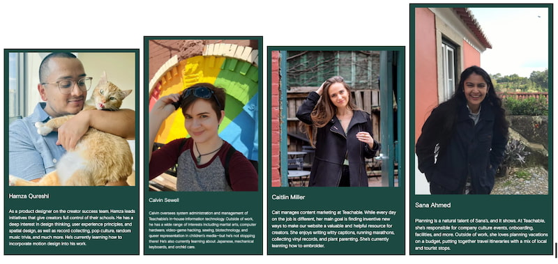

Our Team's Favorite Adventures

-
We're a team of passionate travelers, and we love to share our
favorite spots with you. Here are some of our top picks for your
next adventure:
-
Hiking the Annapurna Circuit in Nepal: For the breathtaking mountain
views and the incredible sense of accomplishment.
-
Exploring the Ancient Ruins of Petra, Jordan: A journey back in time
to a city carved from rock.
-
Road Tripping Through the Scottish Highlands: For the dramatic
landscapes, historic castles, and cozy pubs.
-
Diving in the Great Blue Hole, Belize: An underwater adventure
you'll never forget.
-
Experiencing the Northern Lights in Iceland: A magical display of
nature's beauty.